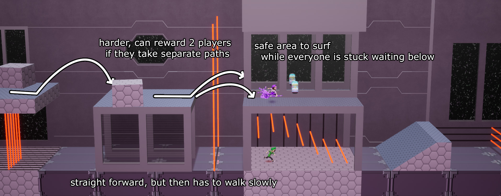
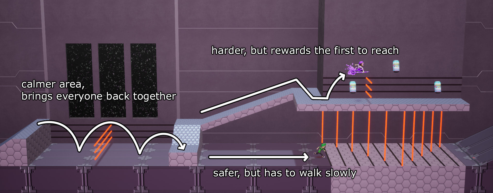

Channel Surfers (2019)
Channel Surfers is a multiplayer game developped for the Ubisoft Game Lab Contest, made in Unreal 4 with a team of 8. The theme was "spectacle".
Channel Surfers is a competitive platforming game that takes place in a TV screen. Players try to outrun eachother by dodging obstacles while surfing through TV channels. The public has control over the remote using an extention on Twitch streams, allowing them to pick the next channel and cause chaos with TV settings.
The game won Best Technical Challenge and Innovation, and got 3 nominations including Best Prototype.
My tasks:
- Game design iteration and documentation
- Level design on the Sci-Fi channel
- Menu design and scripting
- 3D art (characters, Sci-Fi)
Goals:
- Document the mechanics and systems, communicate them with the programmer.
- Collaborate and iterate on the Game Feel with the programmer and other designers.
- Make levels that had twists unique to the Sci-Fi channel, while fitting in the flow of a match.
- Design and script visual polish and juicyness elements that fit the theme of the game.
Video reflects the work of the entire team.
Design Approach
The game is centered around the act of racing through TV channels. From the players' view, they run through a short level, then start seeing a hint of platforms as noisy shapes, and finally they get swapped to a different channel. We wanted players to feel like the levels never end, as if the whole match was one continuous level.
In order to achieve this illusion, we needed a pipeline that makes it look like levels never end, while keeping complete control over the flow of levels. Since players score points whenever someone gets out of the screen, it was important for us to create moments where players can distance themselves from the others.
Our solution was to create a bank of "main" sections and a bank of "transition" sections. A channel always starts with a random transition, seamlessly continues into a main section, and ends with another random transition. This allowed us to create individual levels that are built around one central idea, then seamlessly turn into transitions designed to be strong moments.
Level design
I was in charge of the levels in the Sci-Fi channel. In each of my levels I picked a mechanic, introduced it safely, gave a risk/reward option to the players, and ended on a twist on the idea.
Here is one example of what I did using the laser mechanic throughout one level.


The theme
Given my experience as a technical artist, I took charge of a lot of the visual feedback and polish in the game. I made sure to design features that fit the game's themes and diegesis, but also were feasible given our limited time and resources.
These small additions really helped the "game feel" and brought the project together. For example:
- Random short videos right before the countdown to simulate someone surfing through channels
- Menus navigate like a VHS, then seamlessly zooms into the real game
- Making the whole game and UI run in a television screen
- Preview the next channel's platforms using a noisy post-process effect
- Camera shakes, character outlines through geometry, particle effects